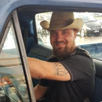

Über uns
Familienbetrieb seit 1982 – unsere Geschichte, unsere Werte und die Menschen dahinter.
Firmengeschichte
Über 40 Jahre Leidenschaft für Automobile.
Die Gründung
Die Firmengeschichte von Hänßler-Rott beginnt im Jahr 1982 in Rudersberg – seither steht der Familienbetrieb für zuverlässige Kfz-Arbeit an Alltagsfahrzeugen und Klassikern.
Hochwasser & Wiederaufbau
Das schwere Hochwasser im Wieslauftal beschädigte unsere Werkstatt erheblich – Maschinen, Werkzeuge, Büro, Ersatzteile sowie Kunden- und Firmenfahrzeuge standen unter Wasser. Nach einer Zeit im Notbetrieb haben wir mit viel Einsatz wieder aufgebaut und nehmen seither wieder Aufträge an.
Fachbetrieb für historische Fahrzeuge
Zertifizierung als Fachbetrieb für historische Fahrzeuge durch die Kfz-Innung – Anerkennung für unsere langjährige Erfahrung mit Oldtimern und Klassikern.
Unsere Werte
„Wir sind erst zufrieden, wenn der Kunde zufrieden ist.“
Kundenzentriert
Freundlicher Umgang, die Meinung unserer Kunden zählt – der Kunde steht im Mittelpunkt unseres Handelns.
Zuverlässig & schnell
Zusagen halten wir ein, kleinere Arbeiten erledigen wir zügig – ohne unnötige Wartezeiten.
Transparent
Wir informieren über durchgeführte Arbeiten und erklären die Rechnung verständlich.
Sorgfältig & umweltbewusst
Gründliche Qualitätskontrolle, nur wirklich nötige Teile werden getauscht – mit Blick auf die Umwelt.
— Bernhard und Axel Hänßler-Rott und das gesamte Team
Unser Team
Die Menschen hinter Hänßler-Rott.

Lernen Sie uns persönlich kennen
Kommen Sie vorbei oder rufen Sie uns an – wir freuen uns auf Sie.